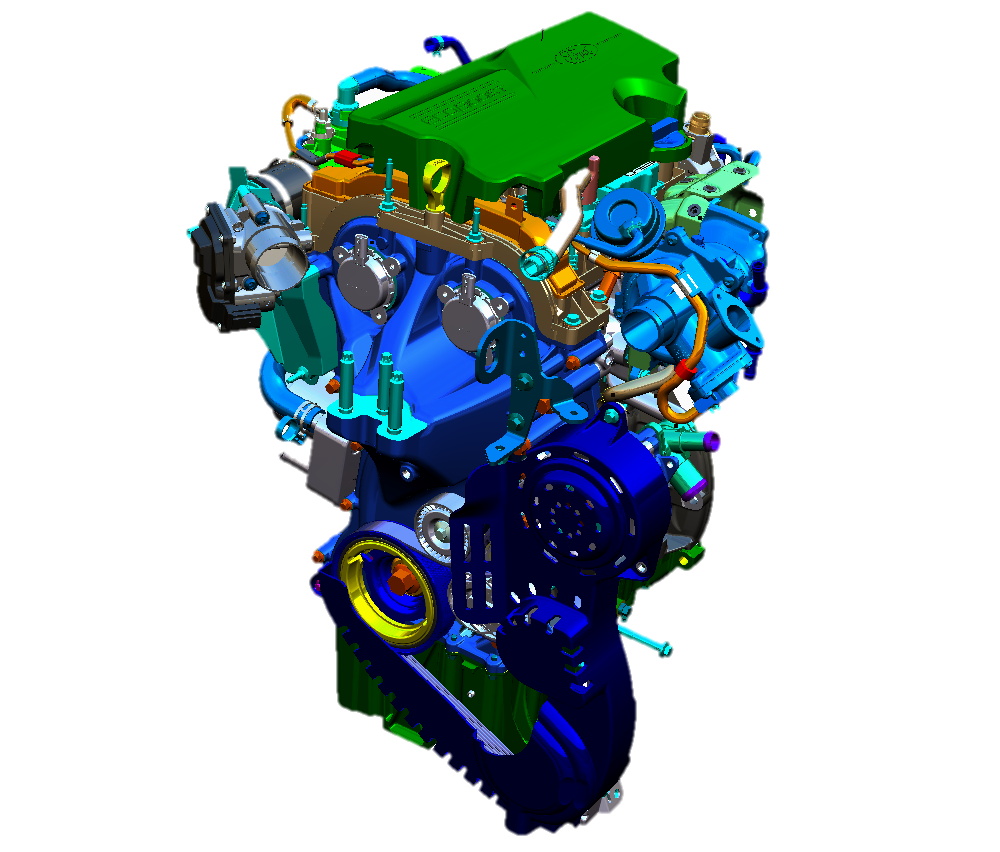

Aviation Industry
Synchronization of regulation documentation with the design rule repository, building links between regulation documents in natural language rules to reduce time and design errors.

Automative Industry
Synchronization of design specifications with computer aided design data to increase the productivity of cross functional engineering teams by analysing the impact of design changes.
Software Industry
Traceability among artifacts produced in different stages of software development to prevent unsychronized and inconsistent trace-links increase the quality of the projects.
Features
Tarski is a tool that supports automated reasoning about traces based on configurable trace semantics, recently described in (Erata et al., 2017) and demonstrated in (Erata, Goknil, Tekinerdogan, & Kardas, 2017). It has been implemented as a set of Eclipse plug-ins that activate the user interfaces and provides the features specifying trace types and their semantics, assigning traces in the artifacts using user-defined trace types, and reasoning about traces (i.e., deducing new traces and checking consistency of traces).
Specification of Trace Semantics
Trace Assignment in Project Artifacts
Traceability Management
Automated Reasoning about Traces
Implementation
We use Kodkod (Torlak & Jackson, 2007; Torlak, 2008), an efficient SAT-based finite model finder for relational logic, to perform automated trace reasoning using the user-defined semantics. Trace types and their semantics are specified in the restricted (cf. grammar) form of Alloy, while the artifacts containing manually assigned traces are automatically transformed into Alloy specifications. Using the trace semantics and the artifacts in Alloy (Jackson, 2012), we directly call KodKod API to reason about traces. The decision procedure of KodKod model finder is integrated instead of using Alloy Analyzer since Alloy has no notion of partial models. If a partial traceability instance is available for a set of Alloy constraints which is usually the case, it can only be provided to the analyzer in the form of additional constraints. Since KodKod, that is the back-end reasoner of Alloy Analyzer, is essentially forced to rediscover the partial model from the constraints, the approach is limited in scale (Torlak, 2008).
Evaluation Results
Details about evaluation result of the system for three different instances given the above specification. Minisat (Eén & Sörensson, 2003) Sat Solver is chosen for both Alloy (alloy4.2-2015-02-22.jar) and KodKod (Kodkod 2.1) solvers. From Alloy to SMT solver translation for these cases, we employ the translation method proposed by El Ghazi et.al. (2011) and the problems are encoded in SMT-LIB (Barrett, Stump, Tinelli, & others, 2010) syntax which is fed into Z3 solver (Moura & Bjørner, 2008). Solving times are indicated in milliseconds. Transitive closure and integer arithmetic aren't used in these use cases to fairly benchmark the results with the SMT solver. In SMT-LIB, the logic is set for Equality Logic with Uninterpreted Functions (UF). Evaluation results are obtained on a machine, that runs 64 bit debian linux operating system with 8 GB of memory and 2.90GHz Intel i7-3520M CPU.
Publications
- Erata, F., Gardent, C., Gyawali, B., Shimorina, A., Lussaud, Y., Tekinerdogan, B., … Monceaux, A. (2017). ModelWriter: Text and Model-Synchronized Document Engineering Platform. In 32th IEEE/ACM International Conference on Automated Software Engineering (ASE’17) (pp. 928–933). IEEE.
- Erata, F., Goknil, A., Tekinerdogan, B., & Kardas, G. (2017). A Tool for Automated Reasoning about Traces Based on Configurable Formal Semantics. In 2017 11th Joint Meeting on Foundations of Software Engineering, ESEC/FSE 2017. ACM.
- Erata, F., Challenger, M., Tekinerdogan, B., Monceaux, A., Tüzün, E., & Kardas, G. (2017). Tarski: A Platform for Automated Analysis of Dynamically Configurable Traceability Semantics. In the 32nd ACM SIGAPP Symposium on Applied Computing (pp. 1607–1614). ACM.
References
- Torlak, E., & Jackson, D. (2007). Kodkod: A Relational Model Finder. In the 13th International Conference on Tools and Algorithms for the Construction and Analysis of Systems (TACAS’07) (pp. 632–647).
- Jackson, D. (2012). Software Abstractions: Logic, Language, and Analysis. MIT press.
- Torlak, E. (2008). A Constraint Solver for Software Engineering: Finding Models and Cores of Large Relational Specifications (PhD thesis). Massachusetts Institute of Technology.
- El Ghazi, A. A., & Taghdiri, M. (2011). Relational reasoning via SMT solving. In International Symposium on Formal Methods (pp. 133–148). Springer.
- Ghazi, A. A. E., & Taghdiri, M. (2011). Relational Reasoning via SMT Solving. In the 17th International Conference on Formal Methods (FM’11) (pp. 133–148).
- Eén, N., & Sörensson, N. (2003). An Extensible SAT-solver. In the 6th International Conference on Theory and Applications of Satisfiability Testing (SAT’03) (pp. 502–518).
- Barrett, C., Stump, A., Tinelli, C., & others. (2010). The smt-lib Standard: Version 2.0. In the 8th International Workshop on Satisfiability Modulo Theories (Vol. 13, p. 14).
- Moura, L. D., & Bjørner, N. (2008). Z3: An efficient SMT solver. In International conference on Tools and Algorithms for the Construction and Analysis of Systems (TACAS’08) (pp. 337–340).


{kind=link}
{kind=link}
{kind=link}
{kind=link}
{kind=link}
{kind=link}